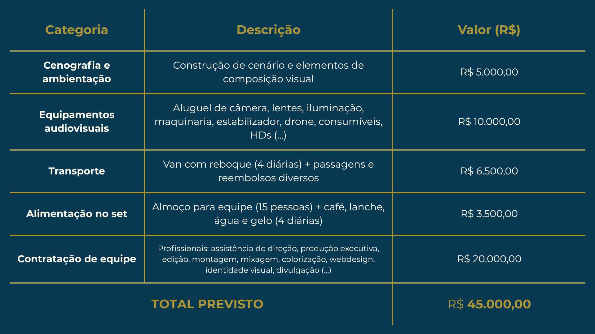

Em caso de dúvidas, entre em contato através de nosso email: omisteriodeservivo@gmail.com.
O curta-metragem O Mistério de Ser Vivo é o primeiro passo de um projeto muito mais amplo.
Atualmente em produção como trabalho universitário por estudantes da graduação em Cinema e Audiovisual da Universidade Federal do Espírito Santo (ES – Brasil), o curta serve como prelúdio para obras maiores sobre o mesmo tema.
A ideia original é de Ester Lisboa, que desenvolve também projetos de um longa-metragem e uma série documental em parceria com a Quixote Produções LTDA – produtora que colabora ativamente na realização deste curta.
Uma produção bem-sucedida deste primeiro filme aumenta significativamente as chances de captação de recursos para os projetos futuros. Por isso, sua contribuição é fundamental para tornar essa obra realidade.
Confira o atestado de realização do documentário pela Ufes: LINK PARA ATESTADO
Portfólio da diretora Ester Lisboa: LINK PORTFOLIO ESTER LISBOA
Portfólio da produtora Quixote Produções: LINK PORTFOLIO QUIXOTE
A produção de um filme exige estrutura e planejamento para transformar uma ideia em uma obra impactante. Para garantir uma produção de qualidade e alcançar o nível técnico necessário para circular em festivais e plataformas de exibição, é essencial captar recursos. Abaixo, detalhamos os principais custos previstos.

Como posso acompanhar quanto foi arrecadado e como o dinheiro está sendo usado?
Essa é uma pergunta essencial — e a transparência é um dos nossos compromissos.
Mantemos uma planilha online pública, onde você pode acompanhar em tempo real quanto já arrecadamos, como os recursos serão distribuídos e como estão sendo utilizados na prática.
Acompanhar arrecadação e uso dos recursos: LINK PARA A PLANILHA
As atualizações sobre o andamento da produção serão divulgadas aqui no site e também pelo nosso Instagram. Neste momento, estamos nas etapas de captação de recursos e pré-produção.
Há muitas formas de fazer o filme chegar ao público — e cada uma pode gerar visibilidade, reconhecimento e até retorno financeiro. Pensando nisso, traçamos a seguinte estratégia de distribuição para O Mistério de Ser Vivo, que será colocada em prática assim que o curta estiver finalizado:
Etapa 1: Festivais de cinema
O filme será inscrito em mostras e festivais nacionais e internacionais. Essa etapa é fundamental para conquistar reconhecimento artístico, visibilidade no circuito e possíveis premiações — o que aumenta significativamente o valor da obra no mercado.
Etapa 2: Tentativa de licenciamento
Com a projeção obtida nos festivais, o curta poderá ser oferecido para canais como Canal Curta, TV Cultura, Canal Brasil e plataformas de streaming. O licenciamento é uma forma de retorno financeiro e também uma via para alcançar novos públicos.
Etapa 3: Exibição aberta no YouTube
Após o circuito de festivais e as tentativas de licenciamento, o filme será disponibilizado gratuitamente no YouTube, tornando-se acessível a todos e mantendo seu alcance vivo ao longo do tempo.
Essa estratégia se aplica ao curta-metragem. Para os projetos futuros — como a série documental e o longa-metragem — as possibilidades de distribuição são ainda mais amplas, incluindo exibições em salas de cinema comerciais.